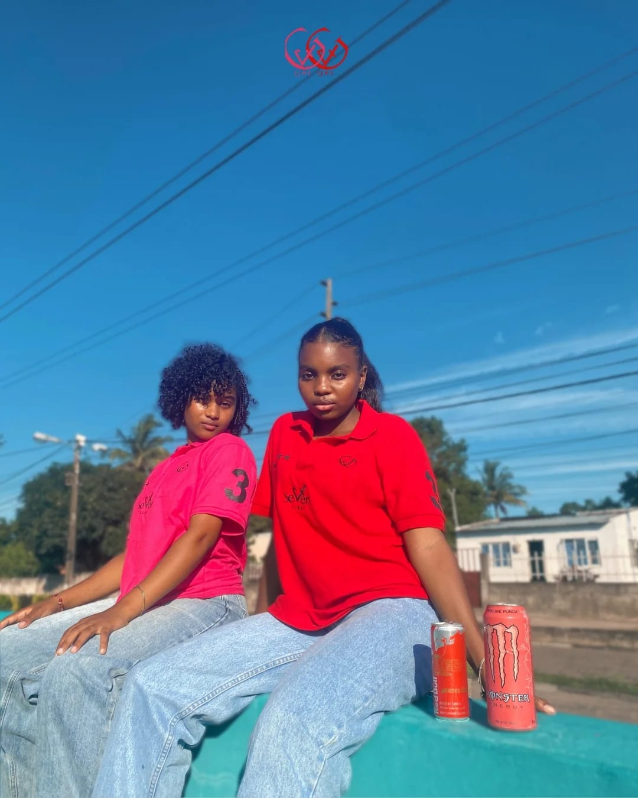

Verde
INDEPENDENTE. MOÇAMBICANA. ORIGINAL.
VESTE A
TUA HISTÓRIA.
Mais do que roupa. Uma forma de seres tu.
Peças com atitude, criadas para a tua próxima história.
ESTILO SEM REGRAS.
IDENTIDADE SEM LIMITES.↓
IDENTIDADE SEM LIMITES.↓

THE SEVEN WAY OF LIFE.GOD SEVEN LINEMOZAMBIQUE ↗
CADA LINHA CONTA UMA HISTÓRIA✳FEITO PARA SERES TU✳GOD SEVEN LINE✳✳✳✳
ESCOLHE A TUA LINHA
O teu próximo favorito.
Preço sob consulta
Rosa / Vermelho
T-shirts e sacolas
Gostaste de uma peça? Escolhe o teu estilo e fala connosco para confirmar preço e disponibilidade.
07 / LINHAS COM PROPÓSITO
RAÍZES LOCAIS. ATITUDE SEM LIMITES.
Não seguimos
tendências.
Criamos.
Nascemos em Moçambique para quem quer vestir mais do que roupa. Cada peça carrega uma história, uma identidade e um propósito. Agora, faz parte da tua.
Conhece a nossa história ↗A TUA IDEIA. A NOSSA ESTAMPA.
Única. Como tu.
Uma t-shirt, uma sacola ou uma ideia fora da caixa.
Dá vida à tua criatividade com a nossa personalização.